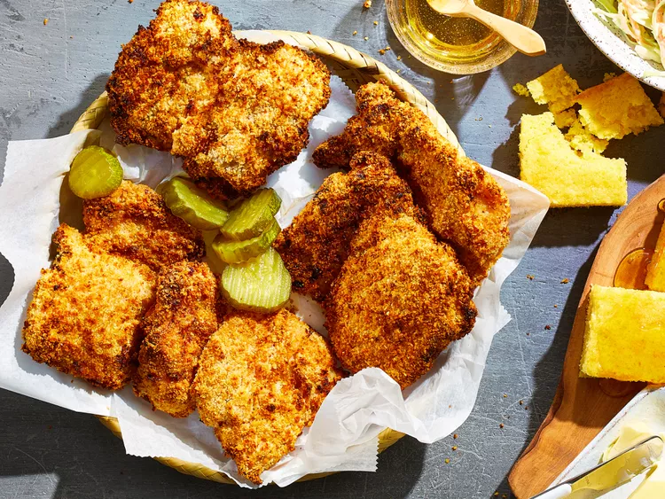

Buttermilk fried chicken in the air fryer... Delicious fried chicken without the fry!
Place chicken thighs in a shallow casserole dish. Pour buttermilk over chicken and refrigerate for 4 hours, or overnight.
Preheat an air fryer to 380 degrees F (190 degrees C).
Mix flour, seasoned salt, and pepper in a large gallon-sized resealable plastic bag. Dredge chicken thighs in seasoned flour. Dip back into buttermilk, then coat with panko bread crumbs.
Spray the air fryer basket with nonstick cooking spray. Arrange 1/2 of the chicken thighs in the basket, making sure none are touching. Spray top of each chicken thigh with cooking spray.
Cook in the preheated air fryer for 15 minutes. Flip the thighs and spray tops of chicken again. Cook until chicken is no longer pink in the center and the juices run clear, about 10 more minutes. An instant-read thermometer inserted into the center should read at least 165 degrees F (74 degrees C). Repeat with remaining chicken.